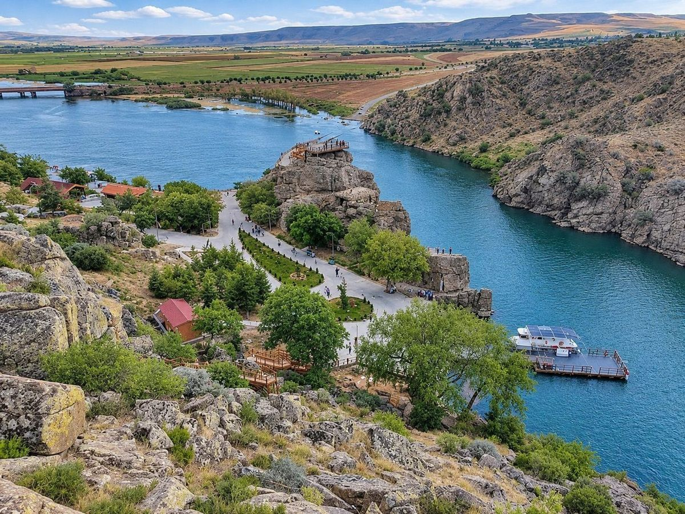

Köyden Canlı Görüntü
Haberler
Yükleniyor…
Açılışımızdan Fotoğraflar
Yükleniyor…
Köyden İlanlar
Yükleniyor…
Köy Takvimi
Bu ayın günleri
Resmî ve dinî günler Ocak 2026 – Aralık 2027 arası için girilmiştir.
Pazar ve Yardım İlanları
İlan verKöyümüzden satılık ürünler, aranan şeyler ve yardım talepleri. İlanlar dernek onayından sonra yayınlanır.
Yükleniyor…
Hakkımızda
Köprüköy Çeşnigir Kültür Sosyal Yardımlaşma ve Dayanışma Derneği
Neler yapıyoruz?
- Köyden haberleri ve duyuruları herkese ulaştırıyoruz.
- Düğün, nişan, mevlit ve cenaze gibi özel günleri takvimde duyuruyoruz.
- Köylülerin alım satım ve yardımlaşma ilanlarına aracılık ediyoruz.
- Çeşnigir Köprüsü'nü ve Köprüköy'ün tarihini tanıtıyoruz.
- Köyde yaşayanla gurbetteki hemşehrilerimiz arasındaki bağı canlı tutuyoruz.
- Dernek merkezi
- Ankara Caddesi, Çarşı Merkezi, Köprüköy
- Açılış
- 6 Eylül 2026

Köyümüz Köprüköy
Kırıkkale'nin Keskin ilçesine bağlı Köprüköy, adını Kızılırmak üzerindeki tarihi Çeşnigir Köprüsü'nden alır. Kayıtlarda 1777'de "Çaşnigir Köprüsü", 1815'te "Çaşnigir Derbendi" adıyla geçer. 1972-2013 arasında belde olan Köprüköy bugün köydür; muhtar ve ihtiyar heyetiyle yönetilir.
- Konum
- Kapulukaya Baraj Gölü'nün doğu kıyısı, Karakeçili'nin karşısı
- Uzaklık
- Keskin 25 km, Kırıkkale 37 km, Ankara yaklaşık 113 km
- Rakım
- 803 m
- Nüfus
- 720 (2024)
- Geçim
- Buğday, arpa, patates, nohut, fasulye, ayçiçeği, pancar; hayvancılık; tatlı su levreği ve sazan balıkçılığı
- Posta kodu
- 71860
Tarihçe
Köprüköy'ün Selçuklu döneminde kurulduğu kabul edilir. Köye adını veren Çeşnigir Köprüsü kesme taştan yapılmıştır; 110 metre uzunluğunda, 6 metre genişliğindedir ve dokuzu ana, üçü boşaltma gözü olmak üzere on iki gözlüdür. Orta açıklığı 18,60 metredir; nehre sağlam oturması için ortası belirgin biçimde yükselir. Uzun yıllar Ankara, Bala, Kaman ve Kırşehir yolunun Kızılırmak geçişi olmuştur.
Köyün adı 1777 yılı kayıtlarında Çaşnigir Köprüsü, 1815 yılı kayıtlarında ise Çaşnigir Derbendi olarak geçer. Kızılırmak türkülerinden "Nettin Kızılırmak Allı Gelini"nde anlatılan olayın bu köyde yaşandığı aktarılır.
"Çeşnigir" Osmanlı sarayında padişahın yemeklerini tadan görevlinin unvanıdır; köprüye bu adın neden verildiği kesin olarak bilinmiyor. Osmanlı döneminde köprü, yol güvenliği için kurulan derbend (geçit tutma) sisteminin Anadolu'daki önemli merkezlerinden biriydi.


Köprü, Anadolu Selçuklu döneminde yapılır. Kesin yapım tarihi ve yaptıranı bilinmiyor.
Rivayete göre Timur'un ordusu Ankara Savaşı'na giderken Kızılırmak'ı bu köprüden geçer.
Kaynaklar köprünün Yavuz Sultan Selim'in Mısır Seferi hazırlıkları sırasında yenilendiğini ve bu işin Mimar Sinan'a atfedildiğini aktarır.
Köy, kayıtlarda "Çaşnigir Köprüsü" adıyla geçer.
Kayıtlardaki adı "Çaşnigir Derbendi" olur; köprü, Osmanlı'nın geçit koruma düzeninin bir parçasıdır.
Köprüköy belediye kurularak belde olur.
Belde en kalabalık yıllarını yaşar: 1985'te 3.020, 2000'de 3.836 kişi.
Kapulukaya Barajı'nın suları yükselir, köprünün bazı ayakları su altında kalır ve köprü araç trafiğine kapanır.
Cumhuriyet döneminde birkaç kez onarılan köprüyü son olarak Karayolları 4. Bölge Müdürlüğü restore eder. Bugün yalnızca yayalara açıktır.
Nüfus 2.000'in altına düşünce belediye kapanır, Köprüköy yeniden köy olur.
Kırıkkale Valiliği'nin çalışmalarıyla Çeşnigir Kanyonu turizme kazandırılır: seyir terası, tekne turu ve yürüyüş parkuru yapılır.
Nüfusun seyri
- 1985
- 3.020
- 1990
- 2.914
- 2000
- 3.836
- 2010
- 1.638
- 2013
- 1.023
- 2020
- 604
- 2024
- 720
Belde dönemi belediye başkanları
- 1973
- Mehmet Güven
- 1977
- M. Dede Köprülü
- 1984
- Şerafettin Güven
- 1989
- Şerafettin Güven
- 1994
- Muzaffer Büken
- 1999
- Selahattin Güven
- 2004
- Oğuzhan Köprülü
- 2009
- Hasan Taşpınar
Kaynak: Vikipedi, Köprüköy (Keskin) · Vikipedi, Çeşnigir Köprüsü · İngilizce Vikipedi, Çeşnigir Köprüsü · İngilizce Vikipedi, Köprüköy · KÜRE Ansiklopedi · Yeni Ankara
Gezilecek Yerler

Yükleniyor…


Kaynak: Türkiye Gazetesi · Discover Cappadocia · Vikipedi, Büklükale · CNN Türk
Konum
Köprüköy, Kızılırmak üzerindeki Kapulukaya Baraj Gölü'nün doğu kıyısında, D.260 karayolu üzerindedir. Çeşnigir Köprüsü köyün hemen batısında, karşı kıyıdaki Karakeçili ile köy arasındadır.
- Adres
- Köprüköy, Keskin / Kırıkkale
- Koordinat
- 39°35′ K, 33°26′ D
- Keskin'e
- 25 km
Finansal Durum
Yükleniyor…